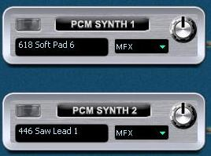
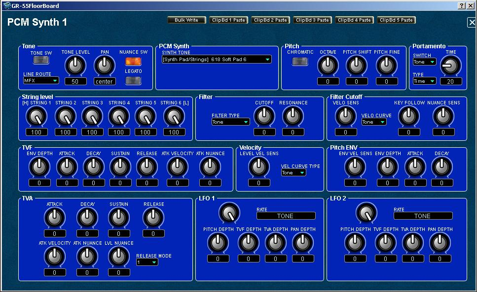
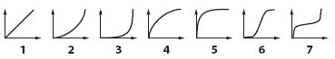

GR-55
FloorBoard Editor
Help
IndexPCM
SYNTHS 1/2
PCM
SYNTH 1 and 2 function identically. If you understand one, you
understand the other. Having two, you can combine them for richer
sounds, like piano with organ, or strings with flutes, or saws with
tablas, it's up to you whether to use one, two or none, which sounds on
each, and which effects and effects structure to use. You enable or disable the
synth by clicking on the ON/OFF switch at the top right of the PCM
SYNTH 1/2 module or the twin button near the top of the editor's main
panel. You can quickly set the synth tone level (volume) and select the
effects module to use for each synth, right on the module itself using
the pull-down menu and with the level knob, or simply click on
the module to open the PCM
Synth parameters
panel for more detailed editing possibilities.
The
PCM
SYNTH 1 or PCM
SYNTH 2 synth
modules look like this on the main editor panel:

The
synth parameter settings pages, PCM
Synth 1 is shown,
both looks like this:

The
following synthesizer sub-modules and their controls are available for
each of the two synth modules:
- Tone - Set the synth tone parameters.
- PCM Synth
- Pitch
- Portamento
- String level
- Filter
- Filter Cutoff
- TVF
- Velocity
- Pitch ENV
- TVA
- LFO 1
- LFO 2
More
information about each of the sub-module settings follows.
Tone
Parameters
The
Tone sub-module
allows you to specify the following synth tone parameter settings:
- TONE SWITCH - Enable (ON) or disable (OFF) the synth. Tones
that are turned “OFF” will not sound (they are muted).
- TONE LEVEL - Set the volume level of synth tone in the mix
of the four tone modules. Balance it here with the other synth, COSM
and guitar tones levels.
- PAN - Left/right in the stereo mix.
- NUANCE SWITCH - Enable (ON) or disable (OFF) the System
> GK > Nuance parameters to influence control of this
synth.
- LINE ROUTE - Select multi-effects (MFX), amplifier and
modeling (Amp/Mod), or Bypass as effects options.
- LEGATO - Enable (ON) or disable (OFF) slurring from
note to note. When you play notes in a smoothly connected manner by
hammering-on or pulling off, only the pitch will change, and no attack
will be heard for the subsequently played note. The legato function can
be used if CHROMATIC is ON, which can be set in the Pitch sub-module,
described below.
PCM
Synth
- SYNTH TONE - Select which sound style tone to assign to the
synth.
Pitch
- CHROMATIC - Turn this “ON” if you want the tone to sound in
chromatic steps. If this is “ON,” the pitch will change only in
semitone steps, even if you “bend” a string.
- OCTAVE - Shifts the tone’s pitch in steps of an octave.
Range: -3 to +3 octaves.
- PITCH SHIFT - Specifies the tone’s pitch (semitone steps,
+/-2 octaves). Range: -24 to +24 semitone steps.
- PITCH FINE - Specifies the tone’s pitch (in one cent steps;
equivalent to 1/100 semitone). Range: -50 to +50.
Portamento
- SWITCH - Three-way: ON/OFF/TONE, where TONE uses the
setting most appropriate for the tone (e.g. Piano = OFF).
- TYPE - Select RATE
or TIME
- RATE - The time required for the pitch change is
proportionate to the amount of pitch change.
- TIME - The pitch change will occupy the same
length of time regardless of the amount of pitch change. Use the TIME knob to set the
time value.
String
level
- STRING 1-6 - Set the output level for each string, from 0
to 100, independently for each synth..
Filter
Filter
Types
- OFF - The filter will not be used.
- LPF - Low Pass Filter. The region above the cutoff
frequency will be cut, making the sound more mellow.
- BPF - Band Pass Filter. The region around
the cutoff frequency will remain, and the regions above and below will
be cut. This is a useful way to create a distinctive sound.
- HPF - High Pass Filter. The region below
the cutoff frequency will be cut. This is appropriate for percussive
sounds with a distinctive high-frequency component.
- PKG - Peaking Filter. The region around the cutoff
frequency will be emphasized. You can produce a wah effect by
using an LFO to cyclically change the cutoff frequency.
- LPF2 - Low Pass Filter 2. The region
above the cutoff frequency will be cut, but the filter sensitivity will
be half that of LPF. This is suitable for simulating
instruments such as acoustic piano.
* If “LPF2” is selected, the RESONANCE setting will be unavailable.
- LPF3 - Low Pass Filter 3. The region
above the cutoff frequency will be cut, but the filter sensitivity will
change according to the cutoff frequency. This is suitable for
simulating acoustic instruments, but even with the same TVF
ENVELOPE settings, it will produce a sound with a different
nuance than LPF2.
* If “LPF3” is selected, the RESONANCE setting will be unavailable.
- TONE - The setting most appropriate for the tone will be
used.
Filter
Knobs
- CUTOFF - Specifies the frequency at which the filter will
begin to be applied. Range: -50 to +50.
- RESONANCE - Boosts the region near the cutoff frequency,
giving the sound a distinctive character. Raising this value
excessively may cause oscillation and
distortion. Range:
-50 to +50.
TIP: Try
assigning one of these to the GK knob for those Kieth Emerson or Brian
Eno moments on long sustained synthy sounds! Yowza!
Filter
Cutoff
- VELO SENS - Specifies the amount by which your playing
strength will vary the cutoff frequency. With positive “+” values,
stronger playing will raise the cutoff frequency. Range: -50
to +50.
- VELO CURVE - FIX/1-7/CURVE: Specifies the curve by which
your playing strength will affect the cutoff frequency. Normally, you
should choose “TONE.” The optimal curve for each tone will be used. If
you don’t want the cutoff frequency to be affected, choose “FIX”. The
seven curves are shown below:

- KEY FOLLOW - Specifies how the pitch of the note you play
will affect the cutoff frequency. With positive “+” values, the cutoff
frequency will rise as you player higher notes. Range: -200 to
+200.
- NUANCE SENS - Specifies how nuances of your performance
(see also: Using the Nuance Parameters, below ) will affect the filter
cutoff frequency. Range: -50 to +50.
TVF
ROLAND's online glossary defines TVF as Time Variant Filter, the
component within a tone or partial that controls the frequency content
of its audio.
The following TVF parameters are available in the GR-55:
- ENV DEPTH - Adjusts the depth of the TVF envelope. Higher
values will increase the change produced by the TVF
envelope. Range:
-50 to +50.
- ATTACK (Time) - Adjusts the attack time of the filter
envelope. Range: -50 to +50.
- DECAY (Time) - Adjusts the decay time of the filter
envelope. Range: -50 to +50.
- SUSTAIN (Level) - Adjusts the sustain level of the filter
envelope. Range: -50 to +50.
- RELEASE (Time) - Adjusts the release time of the filter
envelope. Range: -50 to +50.
- ATTACK VELOCITY (Sens) - Specifies how your playing
strength will affect the filter attack time. With positive “+” values,
stronger playing will shorten the attack time. Range: -50 to
+50.
- ATTACK NUANCE (Sens) - Specifies how nuances of your
performance (p. 28) will affect the filter attack time. Range:
-50 to +50.
Velocity
- LEVL VEL SEN - Specifies the amount by which your playing
strength will vary the TVF. With positive “+” values, stronger playing
will raise
the filter. Range: -50 to +50.
- VEL CURVE TYPE - FIX/1-7/CURVE: Specifies the curve by
which your playing
strength will affect the TVF. Normally, you should choose
“TONE.” The optimal curve for each tone will be used. If you don’t want
the TVF to be affected, choose “FIX”. The seven curves are
shown below:
Pitch
ENV
- ENV VEL SENS - Specifies how your playing strength will
affect the depth of the pitch envelope. With positive “+” values,
stronger playing will increase the change produced by the pitch
envelope. Range: -50 to +50.
- ENV DEPTH - Adjusts the depth of the pitch envelope. Higher
settings will increase the change produced by the pitch
envelope. Range: -12 to +12.
- ATTACK TIME - Adjusts the attack time of the pitch
envelope. Range: -50 to +50.
- DECAY TIME - Adjusts the decay time of the pitch
envelope. Range: -50 to +50.
TVA
- ATTACK TIME - Adjusts the attack time of the amp
envelope. Range: -50 to +50.
- DECAY TIME - Adjusts the decay time of the amp
envelope. Range:
-50 to +50.
- SUSTAIN LEVEL - Adjusts the sustain level of the amp
envelope. Range: -50 to +50.
- RELEASE TIME - Adjusts the release time of the amp
envelope. Range: -50 to +50.
The
following features can only
be
seen and adjusted if Single
Window Layout is
disabled (OFF) in the GR-55
FloorBoard - Preferences panel
under the menu item Settings
> Preferences > Window (editor
restart required):
- ATTACK VEL SENS - Specifies how your playing strength
will affect the attack time. With positive “+” values,
stronger playing will shorten the attack time. Range: -50 to
+50.
- ATTACK NUANCE SENS - Specifies how nuances of your
performance (p. 28) will affect the attack time of the level.
- LEVEL NUANCE SENS - Specifies how nuances of your
performance (p. 28) will affect the volume. Range: -50 to +50.
- RELEASE MODE -
- 1 - The next note will be sounded while maintaining the
release of a previously played note sounding on the same
string.
- 2 - Any previously played note sounding on the same
string will be forcibly decayed before the next note is sounded
LFO 1
and LFO 2
LFO
1 and LFO 2 work alike, but can be configured independently for
creating more interesting effects. The following parameters can be
configured.
- RATE - Specifies the LFO rate
(speed). Range: 0
to 100.
- BPM - Makes the LFO rate synchronize to the tempo in units
of the note value you specify.
- TONE - The LFO rate will be set appropriately for the tone.
The
following features can only
be
seen and adjusted if Single
Window Layout is
disabled (OFF) in the GR-55
FloorBoard - Preferences panel
under the menu item Settings
> Preferences > Window (editor
restart required):
- LFO1/2 PITCH DEPTH OFF - Specifies how the LFO
will affect the pitch. Choose “OFF” if you don’t want the LFO
to affect the pitch.
- LFO1/2 TVF DEPTH OFF - Specifies how the LFO will
affect the cutoff frequency. Choose “OFF” if you don’t want
the LFO to affect the TVF.
- LFO1/2 TVA DEPTH OFF - Specifies how the LFO will affect
the volume. Choose “OFF” if you don’t want the LFO to affect
the TVA.
- LFO1/2 PAN DEPTH OFF - Specifies how the LFO will
affect pan (stereo position). Choose “OFF” if you don’t want
the LFO to affect pan.
Using
the Nuance Parameters
The
Nuance parameters detect when you play your guitar/bass with a soft
touch, and apply a corresponding change to the sound of the
PCM
tone.
For
example, if CUTOFF NUANCE SENS is set to a positive “+” value, the
cutoff frequency of the PCM tone will be lowered when you play a muted
or a finger-picked note, producing a softer tone quality.
As
another example, you might use PCM TONE 1 to create the sound that will
be heard when you pluck the string with a pick, and PCM TONE 2 to
create the sound that will be heard when you pluck the string with your
finger. Then set the Nuance parameters as follows, allowing
you to switch between PCM TONE 1 and 2 by alternating your performance
technique.
- PCM TONE 1 settings
TONE CATEGORY/NUMBER: the tone sounded for a note played with a pick
LEVEL NUANCE SENS: +50
- PCM TONE 2 settings
TONE CATEGORY/NUMBER: the tone sounded for a note played with your
finger
LEVEL NUANCE SENS: -50
To
enable the Nuance parameters, turn NUANCE SW “ON” and adjust each
NUANCE SENS parameter as desired.
If
you want to adjust the nuance so it’s appropriate for the guitar or
bass you’re using, set the SYSTEM > GK SETTING parameters NUANCE
DYNAMICS and NUANCE TRIM (for more information, see owner's manual p.
75).
Bulk Write the Current Setting to a Range of Patches
You can use the editor's Bulk Patch Modifier feature to write the
current setting as seen on the open panel to a selectable
range of patches or to all patches if you wish to use the settings globally.
WARNING!!: Existing Patch data will be overwritten.
- Click the Bulk Write button to open the Bulk Patch Modifier.
- Select the starting and the finishing user patch numbers.
- Clcik Start to save the current settings to the selected patches, or click Cancel if you decide otherwise.